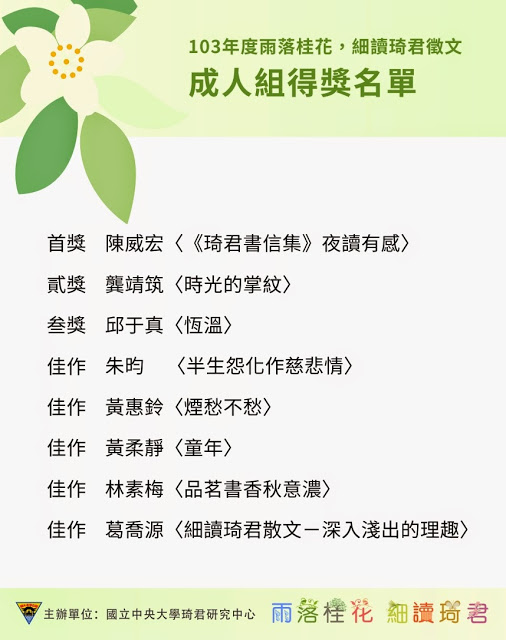
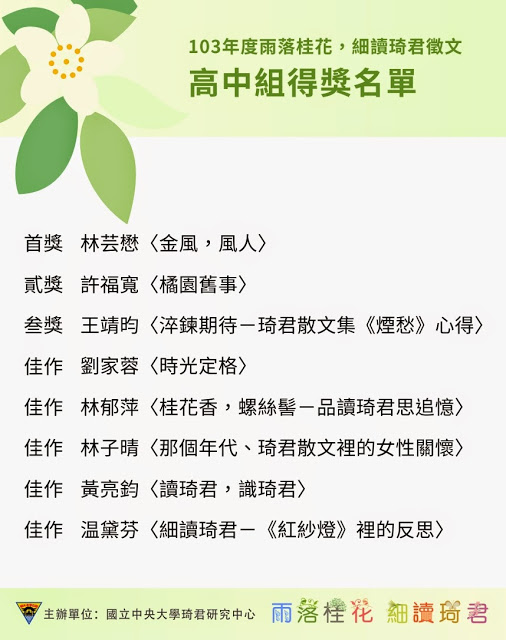

細讀琦君徵文成績揭曉
國立中央大學中文系琦君研究中心今年舉辦的「雨落桂花，細讀琦君」徵文成績揭曉了！
本次比賽獲得讀者熱烈支持，成人組及高中組一共收到逾百篇參賽作品。在經過初審與複審的篩選後，由4位年輕學者擔任決審委員，分別是朱嘉雯、李欣倫、梁竣瓘及黃啟峰。本次得獎作品皆對琦君作品展現了充分的瞭解，並從中得到了深刻的真善美體會。
成人組首獎陳威宏的〈《琦君書信集》夜讀有感〉用第二人稱的筆法看待琦君的溫柔敦厚“勸勉”自己；二獎龔靖筑的〈時光的掌紋〉藉著琦君作品，以回顧的姿態緬懷自身的青春；三獎邱于真的〈恆溫〉則以冬天氛圍帶出母女之間的溫暖。
高中組首獎林芸懋的〈金風，風人〉以課堂為例，說明閱讀琦君散文的受益無窮；二獎許福寬的〈橘園舊事〉一邊講述《橘子紅了》一書內容，一邊將之對照自身的成長歷程；三獎王靖昀的〈淬煉期待——琦君散文集《煙愁》心得〉則主要以〈小金盒〉點出淡淡惆悵感。
琦君研究中心將於11月25日晚間於國立中央大學文學院國際會議廳舉辦一場閱讀琦君座談會暨贈獎典禮。該座談會除了有中央大學的李瑞騰老師及莊宜文老師之外，也邀請到琦君的媳婦陳麗娜女士參與。陳女士為妥善保存琦君女士的遺物，與夫婿李一楠先生自2010年起，即將琦君女士遺留下來的1400餘本藏書、1600餘封信扎、7000張相片及資歷證件正本等捐給國立台灣文學館。
歡迎同好踴躍報名參加，線上報名：http://goo.gl/forms/r8nL2LJuwZ。任何最新的消息可隨時留意琦君研究中心的臉書粉絲頁：facebook.com/NCUchiging。欲知座談會詳情可電郵chiging1917@gmail.com詢問。
以下為本次徵文獲獎名單。所有獲獎作品將集結成書，並在座談會期間免費派發。

